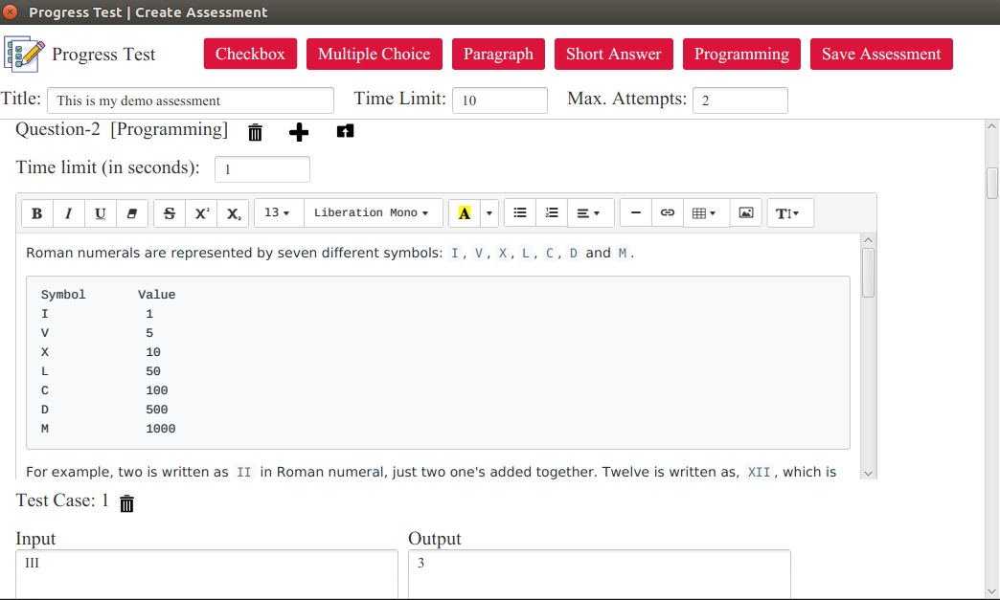

Progress Test
- Are you struggling to maintain your student's assessment record?
- Are you looking for a way to digitalize your assessments?
- Are you looking for a way to conduct personal coding contests?
Progress Test is a simple desktop application built for instructors!
Features of Progress Test
- No registration required!
- Digitalize the assessments
- Supports variety of generic questions e.g. short-answer, long-aswer, multiple-choice, code, etc
- Time-limit and number-of-attempts constraints
- Rich text-editor and rich code-editor with syntax highlighting for multiple programming languages
- Supports automated testing of user's code against pre-defined test cases in language of their choice
- End-to-end encryption/decryption process
- Shuffled questions with shuffled options
- Works fine with low speed internet connection
- and many more...
Applications/Uses
- Can be used as a primary means of examination process in colleges or universities
- Can be used to conduct assessments, assignments, homeworks, etc
- Can be used as an autograder for programming assessments
- and many more such applications
Dependency
You need to first install JDK(Java Development Kit) or JRE(Java Runtime Environment) version 8 in order to run this applicationYou can download the JDK8 from here according to your operating system
You can verify your installation with following command
java -version
The following image shows the output for Ubutnu-16.04

Download and Installation
Download ProgressTest-v1.0 JAROnce you have installed JDK8 and configured the path variables then you can run the application using the command: java -jar ProgressTest.jar
This download is available for trial and is slow because it connects to a trial cloud database
Please contact shubhampanchal9773@gmail.com or panchalprogrammingacademy@gmail.com to get a release for your private configurations
Application screenshots
-
Available features (Attempt, Create, Edit, Delete or Review assessments)
-
Time-limit(in minutes) and max. number of attempts constraints
-
Rich text-editor with copy/paste support from websites, docs, word, etc.
(demo problem copied from LeetCode)  -
Ease of programming-problem creation, import test-cases from system
-
You decide who can attempt
-
Save information locally on your machine
-
End-to-end encryption/decryption
-
Information about number of attempts a student is left with
-
A full-screen blocking window (disable switching tabs) with convenient features (time-limit, question-status, number-of-attempts-left, student-id, ease-of-navigation)
Use refresh button to refresh assessment - for slow internet connections.
Don't worry, your answers will be saved -
Rich editor for students to write answers in more readable format with highlighting effects.
And yeah! Of course, students don't have a copy/paste option -
Rich code-editor with syntax highlighting for multiple programming languages with many interesting themes with support for custom-testing
-
List of past submission (rollback available) with automatic testing against pre-defined test-cases.
-
Safe end-assessment feature (no more argument of closed window by mistake and couldn't attempt my assessment properly)
-
Review report of your students at your convenience
Feedback/Suggestion
We would love to listen to your feedback. You can reach to us via:- Email: shubhampanchal9773@gmail.com, panchalprogrammingacademy@gmail.com
- Mobile: +91 9773669462
- WhatsApp: +91 9773669462
Copyright © 2020 - Progress Test | Panchal Programming Academy
Apache License